DataLumen — prévia da próxima versão
Dados de exemplo. Toque na imagem para abrir em tamanho real.
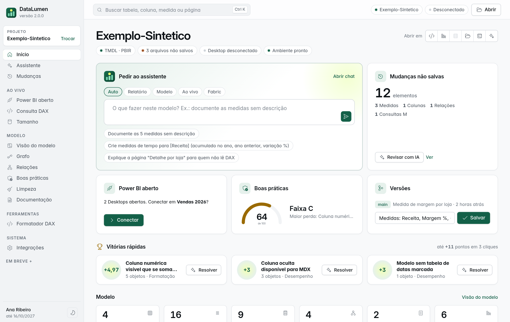
Início: sugestões tiradas do modelo, Vitórias rápidas (+pontos, Resolver com IA), ícones Fluent
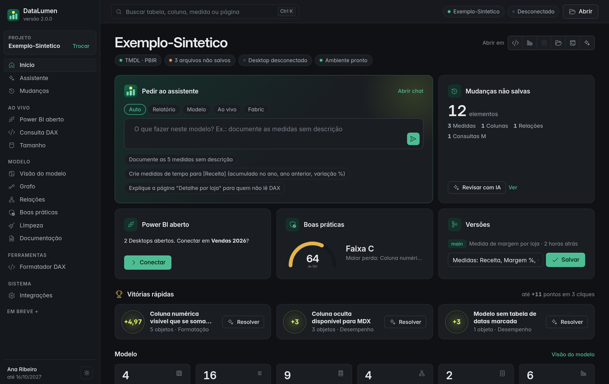
Início no tema escuro
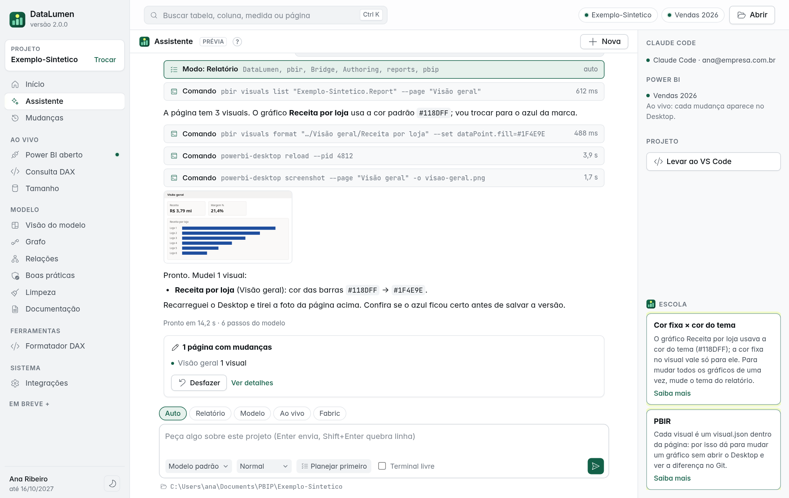
Assistente: o que mudou em linguagem de Power BI, Desfazer, Power BI ao vivo e Escola
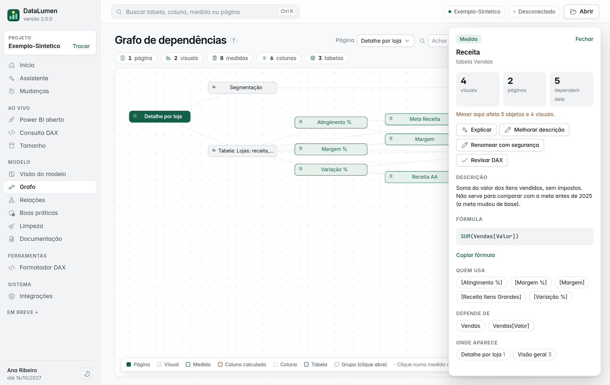
Ficha do objeto: o que quebra se mudar, quem usa, onde aparece, ações com IA
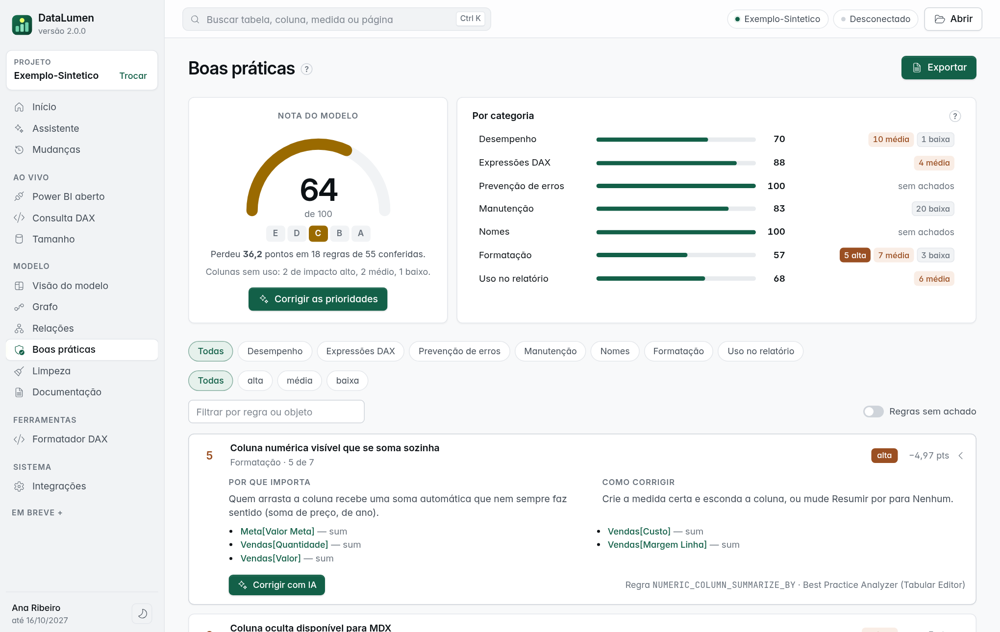
Boas práticas: Corrigir as prioridades e Corrigir com IA por regra
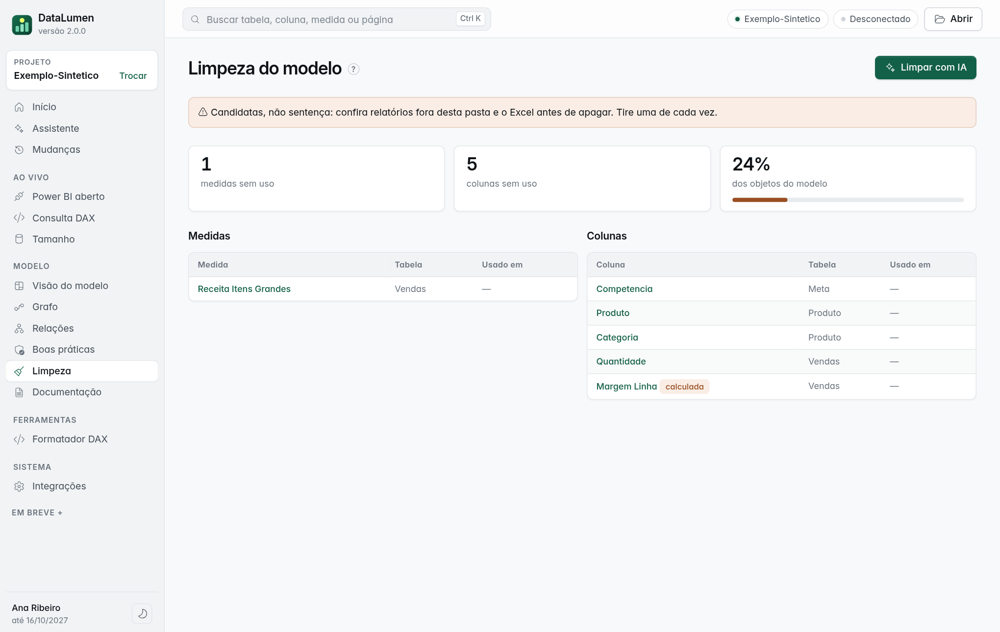
Limpeza: Limpar com IA (com confirmação)
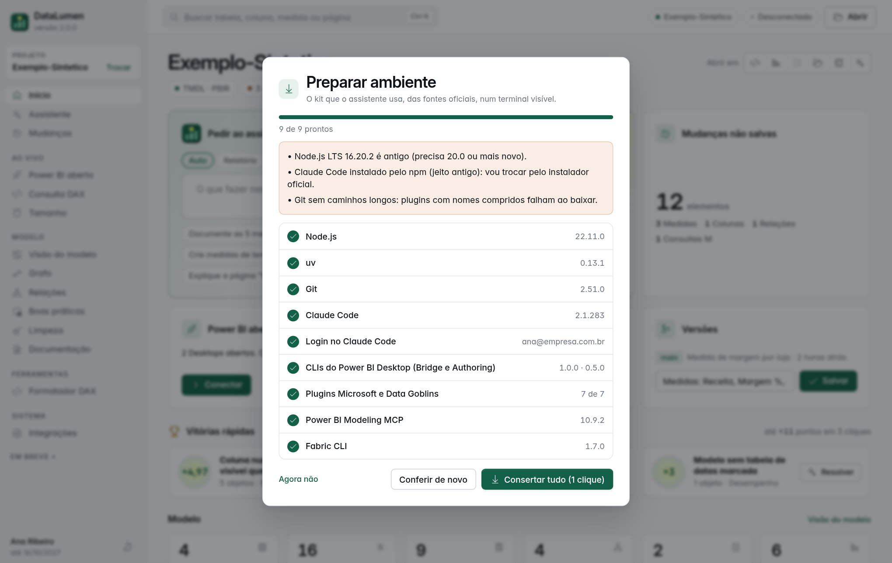
Preparar ambiente: acha o que está errado e conserta num clique
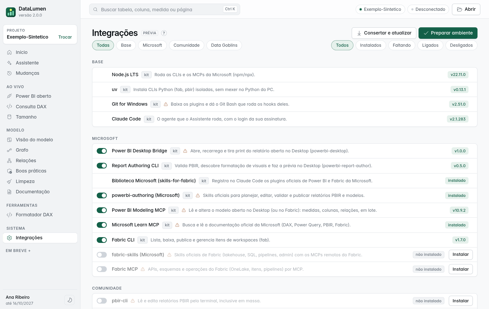
Integrações
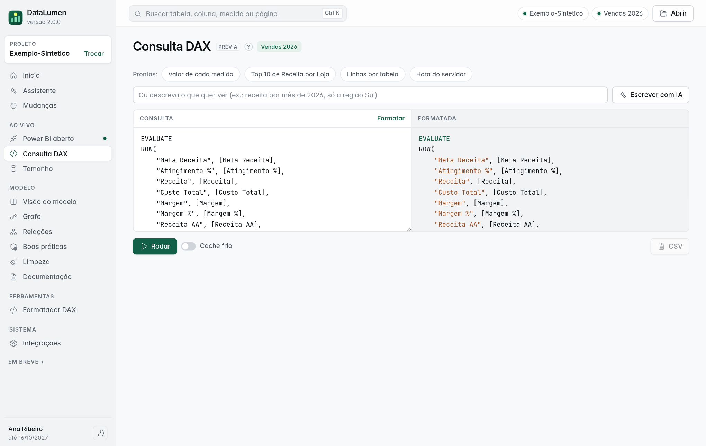
Consulta DAX: prontas com os nomes do seu modelo e Escrever com IA
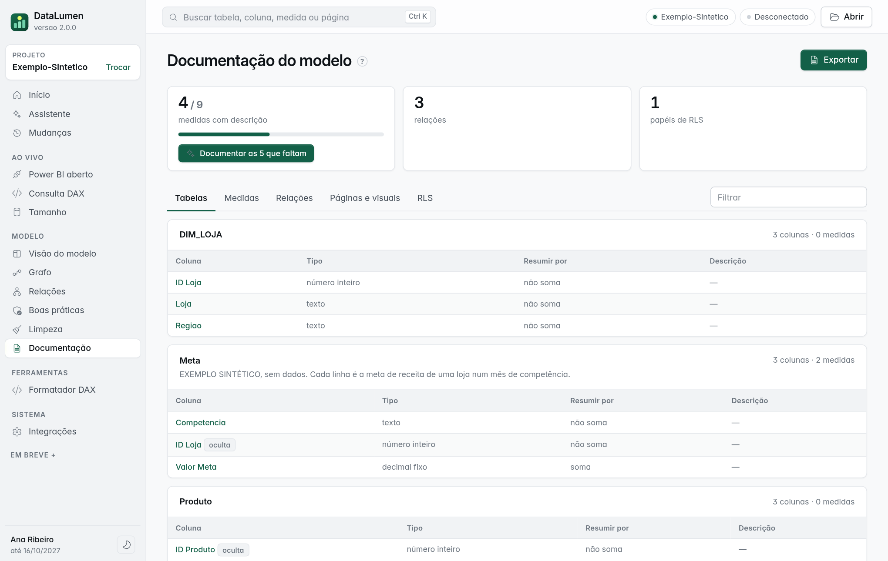
Documentação: Documentar o que falta com IA, tipos em português, nomes abrem a ficha
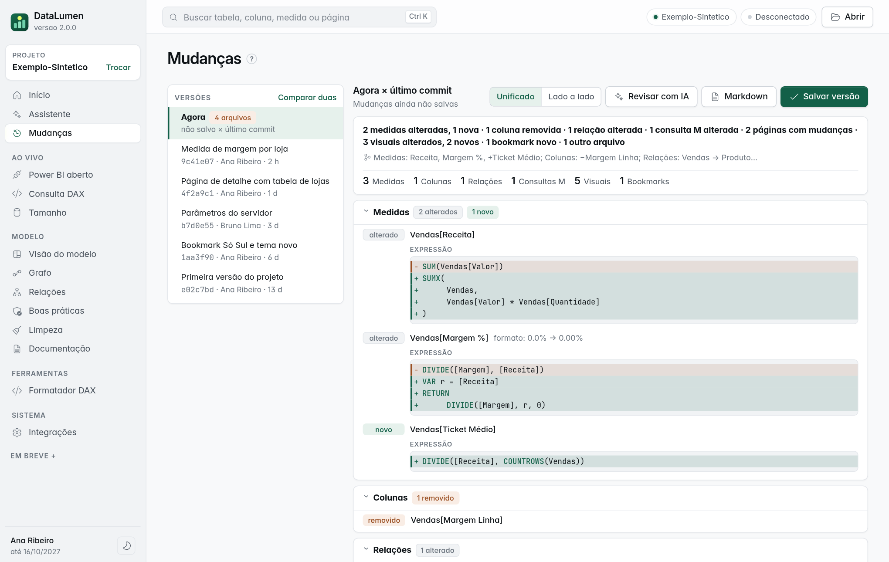
Mudanças: Revisar com IA antes de salvar a versão
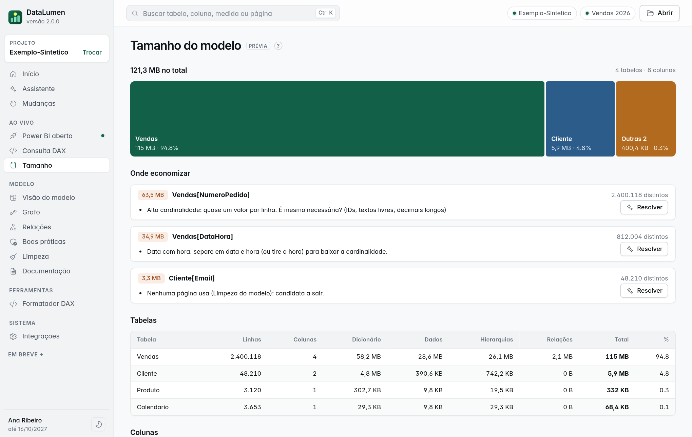
Tamanho do modelo: Resolver com IA em cada coluna pesada